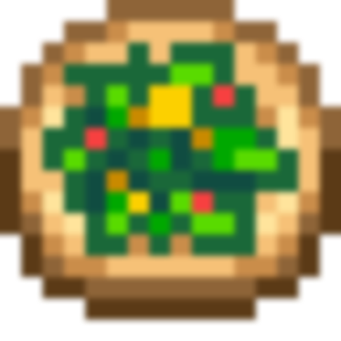

Salad

A healthy garden salad
Salad is a cooked dish. It is prepared using either the kitchen inside an upgraded farmhouse or using a Cookout Kit.
Ingredients
- Leek (1)
- Dandelion (1)
- Vinegar (1)
Steps
- Forage one leek during Spring-time, rarely found in the Mountains and Backwoods
- Forage one Dandelion during Spring-time,commonly found everywhere
- Purchase one Vinegar from Pierre's General Store for 200g
- Combine the ingredients at the kitchen inside your farmhouse, or alternatively using a Cookout Kit